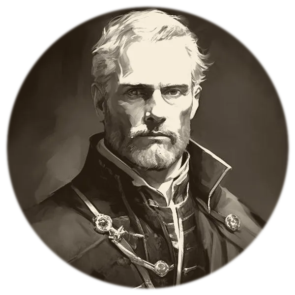
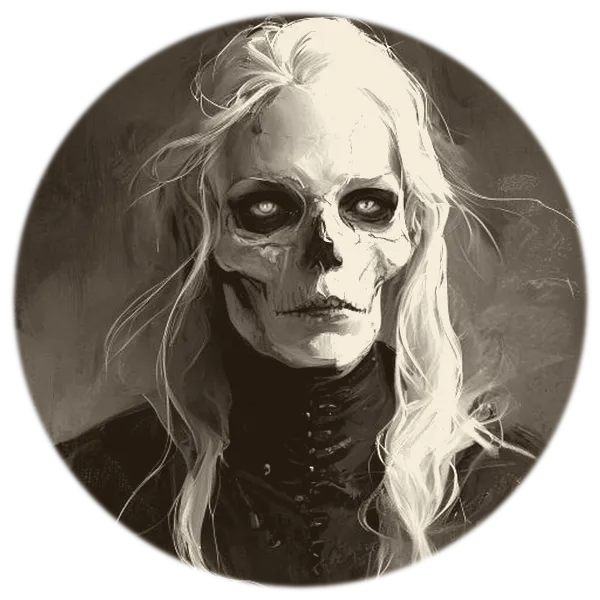
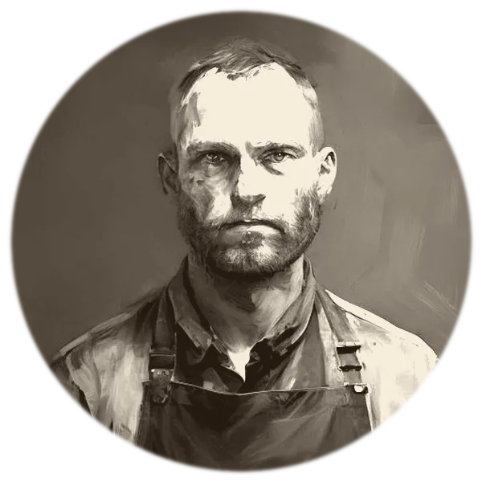

Name someone who does not exist
“The magistrate. The one who can be bought but not bribed.”
She parts the veil
The mind is plotted across one hundred dials — then the life that would have produced it. Every wound answers for a trait, or it is not kept.
Interview them until they surprise you
Press him. Lie to him. Offer him money and watch him take offence. Then leave with the file — and run him on Friday.

You have his name, his trade, and three lines of history. You know he keeps the inn and waters the ale. Then on Friday your players ask him something you never prepared for — and he stops being a man and becomes you, doing a voice. Every game master has sat a character down and interviewed them, and every one has done it alone, in both chairs. Madame Whisper is that interview with the other chair filled. You will never again run a character who sounds like you.



Lord Snodd
He will receive you courteously and concede nothing. Ask him what the title cost his father, and watch him decide how much of it you are owed.

Alcyne Vess
She has guarded the same door for four hundred years and remembers every party that came through it. She will ask after people you have never heard of.

Corwin Ash
He shoes the Watch's horses, so he hears everything and repeats none of it. Offer him coin and he will finish the shoe before he answers you.
Magistrate Iver Dain
There is a price, and it is never money. Find what he wants and the law bends; offer him a purse and you will meet the other magistrate entirely.
Sister Renna Cole
She knows what is down there and has not told the diocese. Ask her why she stays, and she will tell you it is not faith.
Elsbeth Frayne
Everyone tells her the truth because she only writes numbers down. She knows who owes whom, and she has known for years.
 …and whoever else your world is waiting on.
…and whoever else your world is waiting on.
She does not hand you a chat log. She hands you a dossier: who he is, what he wants, what it cost him, how he speaks, who he would betray, and precisely how he comes apart when your players lie to him. Written in his own voice, and unreliable in the places a man is unreliable about himself.
The Calling Card
One page. What he wants, what he fears, how he sounds, and the single thing to remember. This is what sits at your elbow on Friday.
The Standing File
For anyone your players will meet twice. His history, his allies, his leverage, and the wounds that explain why he is like this.
The Whole Bible
For the ones your campaign turns on. Ask him about his world and keep asking, and he will write it — his politics, his faith, his enemies, his dead.


The parlour is not yet open. Leave your card and you will be sent word the evening it is — before it is announced anywhere else. Founding Members are seated first, and there are only so many chairs.
 “He was always in there.
“He was always in there.He simply had not spoken.”